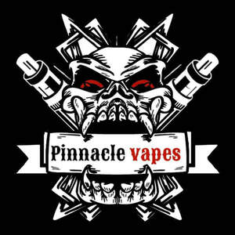

Trade Mark Journal No.2025/032 8 August 2025
UK00004197970 2 May 2025 (34)

- Class 34
- Oral vaporizers for smokers; Smokeless cigarette vaporizer pipes; Vaporizers for smoking purposes; Electronic cigarette cartomizers; Electronic cigarette atomizers; Electronic cigarette liquid [e-liquid] comprised of flavorings in liquid form used to refill electronic cigarette cartridges; Electronic cigarette liquid [e-liquid] comprised of vegetable glycerin; Cigarettes, cigars, cigarillos and other ready-for-use smoking articles; Electronic cigarette liquid [e-liquid] comprised of propylene glycol; Pipes for smoking mentholated tobacco substitutes; Liquid nicotine solutions for use in electronic cigarettes; Liquid nicotine solutions for electronic cigarettes; Personal vaporisers and electronic cigarettes, and flavourings and solutions therefor; Electronic nicotine inhalation devices; Snus with tobacco; Chemical flavourings in liquid form used to refill electronic cigarette cartridges; Liquids for electronic cigarettes; Snus; Snus without tobacco; Devices for heating tobacco for the purpose of inhalation; Hookah tobacco; Electronic cigarette liquid [e-liquid] comprised of flavourings in liquid form used to refill electronic cigarette cartridges; Shisha tobacco; Cigar humidifiers; Menthol pipe tobacco; Menthol cigarettes; Humidifiers for tobacco; Flavored tobacco; Hemp for smoking; Tobacco free oral nicotine pouches [not for medical use]; Cigar pouches; Chemical flavorings in liquid form used to refill electronic cigarette cartridges; Humidifiers for cigars; Cigarette tobacco; Refill cartridges for electronic cigarettes; Roll-your-own tobacco; Cigars for use as an alternative to tobacco cigarettes; Smoking tobacco; Smokeless tobacco; Cigar lighters; Electronic shisha pipes; Mentholated tobacco; Flavorings, for use in electronic cigarettes; Tobacco tar for use in electronic cigarettes; Tea for smoking as a tobacco substitute; Tobacco containers and humidors; Flavourings for tobacco; Mouthpieces for cigarettes; Portable cigarette ash pouches; Cartridges for electronic cigarettes; Flavourings for use in electronic cigarettes; Cigar filters; Lighters for smokers; Smokers (Lighters for -); Liquid for electronic cigarettes; Pipe tobacco; Pouches for tobacco; Tobacco pouches; Pouches (Tobacco -); Inhalers for use as an alternative to tobacco cigarettes; Cigar tubes; Electronic hookahs; Hookahs; Electronic devices for the inhalation of nicotine containing aerosol; Devices for extinguishing heated cigarettes, cigars and heated tobacco sticks; Tobacco; Cigarillos; Shisha pipes; Replaceable cartridges for electronic cigarettes; Gas containers for cigar lighters; Cigar lighters (Gas containers for -); Devices for extinguishing heated cigarettes and cigars as well as heated tobacco sticks; Cigar clippers; Tobacco pipe cleaners; Electronic cigarette cleaners; Electric cigarettes [electronic cigarettes]; Electronic cigars; Herbs for smoking; Tobacco tins; Cartridges sold filled with chemical flavourings in liquid form for electronic cigarettes; Tobacco free cigarettes, other than for medical purposes; Cartridges sold filled with chemical flavorings in liquid form for electronic cigarettes; Cigarettes; Hand-rolling tobacco; Tobacco powder; Cigarette lighters; Spittoons for tobacco users; Humidified cigar boxes; Firestones for lighters for smokers; Snuff with tobacco; Smoking pipe cleaners; Lighters for smokers [cigarette lighters] [not for automobiles]; Smoking sets for electronic cigarettes; Liquid solutions for use in electronic cigarettes; Tobacco products; Humidors; Cigarette tubes.
Pinnacle vapes ltd